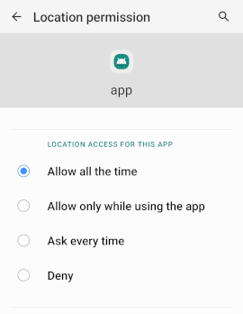

Qt Positioning on Android
Using Qt Positioning from Android Services
Using Qt Positioning from a service requires several extra actions to be taken, depending on the Android version. The sections below give more details on these actions.
Note: Since Android 8 (API level 26), the OS limits how frequently an application can retrieve the user's current location while running in the background. The application will normally be able to receive location updates only a few times each hour. For more information, see Background Location Limits.
Using Foreground Service
Since Android 8 (API level 26), the background service can be killed by the Android OS when the application goes to the background. This normally happens after around a minute of running in the background. To keep the location service running, the service should be implemented as a Foreground Service. Such service shows a status bar notification, which cannot be dismissed until the service is stopped or removed from the foreground. This allows the user to be always aware of the important background activities.
Note: Since Android 9 (API level 28), foreground services require a special FOREGROUND_SERVICE permission. See the Android documentation for more details on implementing foreground services.
Use Background Location Permission
Since Android 10 (API level 29), the service must request the ACCESS_BACKGROUND_LOCATION permission. It should be added to the AndroidManifest.xml file as follows:
<uses-permission android:name="android.permission.ACCESS_BACKGROUND_LOCATION" />
Note: Once the permission is added to AndroidManifest.xml, it is still required to explicitly allow the constant access to the location services for the application. To do it, one should navigate to Settings -> Apps, select a proper application, open its permissions, and specify the Allow all the time permission for Location (see the screenshot below).

Check Access Location in the Background Android documentation for more details.